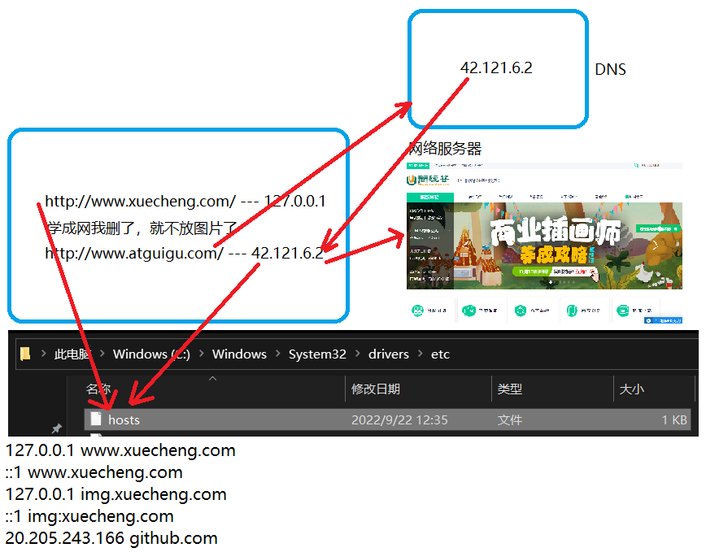
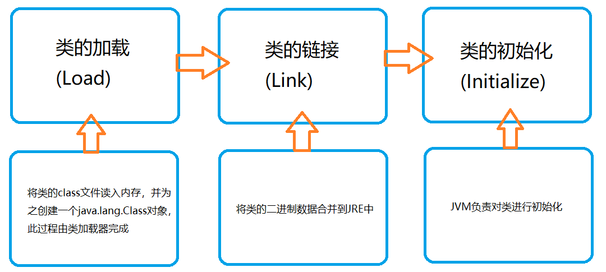
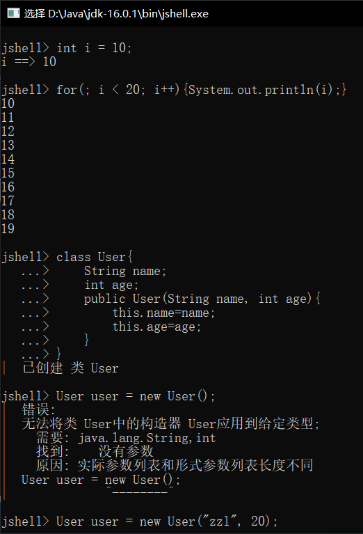
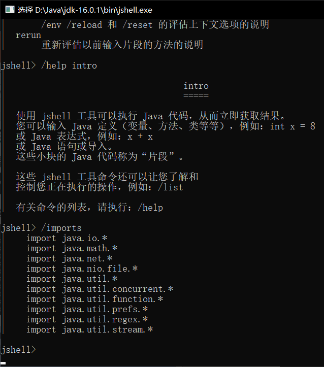
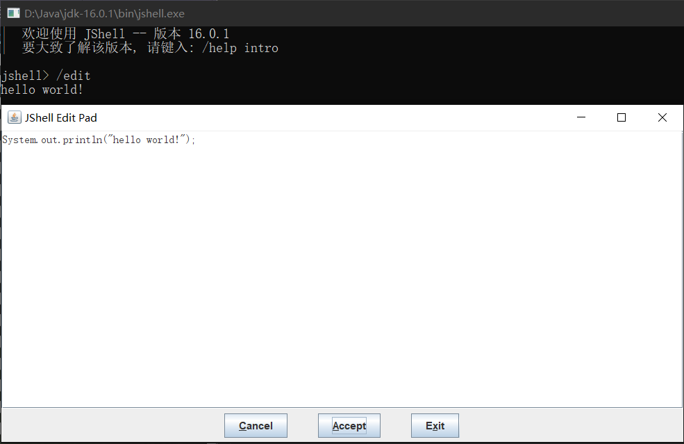

D23M9(网络编程)
网络编程
目的：直接或间接地通过网络协议与其他计算机实现数据交换，进行通讯
网络编程中的两个要素：
- IP和端口号
- 在Java中使用InetAddress类代表IP
- IP分类：IPv4和IPv6；万维网和局域网
- 域名：www.baidu.com、www.mi.com
- 
- 提供网络通信协议：TCP/IP参考模型(应用层、传输层、网络层、物理+数据链路层)
- InetAddress的使用
- 如何实例化InetAddress：getByName(String host)；getLocalHost()
- InetAddress的两个常用方法：getHostName()；getHostAddress()
IP地址
- 唯一的标识Internet上的计算机(通信实体)
- 本地回环地址：127.0.0.1；主机名：localhost
- IP地址分类方式1：IPv4和IPv6
- IPv4：4个字节组成，4个0-255
- IPv6：128位(16个字节)，组成8个无符号整数，每个整数用4个16进制位表示，数之间用冒号(:)分开
- IP地址分类方式2：公网地址(万维网使用)和私有地址(局域网使用)，192.168.开头的就是私有地址，范围为192.168.0.0 - 192.168.255.255，专门为组织机构内部使用
端口号
端口号识别正在计算机上运行的进程(程序)
- 不同的进程有不同的端口号
- 被规定为一个16位的整数0-65535
- 端口分类
- 公认端口：1-1023，被预先定义的服务通信占用(如HTTP占用端口80，FTP占用端口21，TeInet占用端口23)
- 注册端口：1024-49151：分配给用户进程或应用程序(如Tomcat占用端口8080，MySQL占用端口3306，Oracle占用端口1521等)
- 动态/私有端口：49152-65535
- 端口号与IP地址的组合得出一个网络套接字：Socket
传输层协议(TCP和UDP)
TCP协议：
- 使用TCP协议前，须先建立TCP连接，形成传输数据通道
- 传输前，采用“三次握手”方式，点对点通信，是可靠的
- TCP协议进行通信的两个应用进程：客户端，服务端
- 在连接中可进行大数据量的传输
- 传输完毕，需释放已建立的连接，效率低
UDP协议：
- 将数据，源，目的封装成数据包，不需要建立连接
- 每个数据包的大小限制在64k内
- 发送不关对方是否准备好，接收方收到也不确认，故是不可靠的
- 可以广播发送
- 发送数据结束时无需释放资源，开销小，速度快
TCP练习1
握手案例
@Test
public void client() throws IOException {
//创建Socket对象，指名服务器端的ip和端口号
InetAddress inet = InetAddress.getByName("127.0.0.1");
Socket socket = new Socket(inet, 8899);
//使用流输出数据
OutputStream os = socket.getOutputStream();
os.write("hello, I'm client 中国人".getBytes());
//资源的关闭
os.close();
socket.close();
}
@Test
public void server() throws IOException {
//创建服务器端的ServerSocket指名自己的端口号
ServerSocket ss = new ServerSocket(8899);
//侦听要连接到此客户端并接受它
Socket accept = ss.accept();
//创建输入流接收客户端数据
InputStream is = accept.getInputStream();
InputStreamReader isr = new InputStreamReader(is);
char[] c = new char[5];
int len;
while((len = isr.read(c))!= -1){
String str = new String(c, 0, len);
System.out.println(str);
}
System.out.println("收到了来自于:"+accept.getInetAddress().getHostAddress()+"的数据");
//资源的关闭
isr.close();
is.close();
accept.close();
ss.close();
}
TCP练习2
在服务端将客户端上传的文件保存到本地
@Test
public void client() throws IOException {
//创建Socket对象，指名服务器端的ip和端口号
InetAddress inet = InetAddress.getByName("127.0.0.1");
Socket socket = new Socket(inet, 8899);
//使用流输出数据
OutputStream os = socket.getOutputStream();
os.write("hello, I'm client 中国人".getBytes());
//资源的关闭
os.close();
socket.close();
}
@Test
public void server2() throws IOException {
ServerSocket ss = new ServerSocket(8899);
Socket accept = ss.accept();
InputStream is = accept.getInputStream();
FileOutputStream fos = new FileOutputStream("D:\\demo2.txt");
//不涉及资源的访问时，可以省去转换流的使用
InputStreamReader isr = new InputStreamReader(is, "UTF-8");
OutputStreamWriter osw = new OutputStreamWriter(fos);
char[] c = new char[5];
int len;
while ((len = isr.read(c)) != -1) {
String str = new String(c, 0, len);
System.out.println(str);
osw.write(c, 0, len);
}
osw.close();
isr.close();
accept.close();
ss.close();
}
TCP练习3
在案例2的基础上，让服务器端收到数据后返回信息通知客户端，如何客户端做出反应
@Test
public void client() throws IOException {
//创建Socket对象，指名服务器端的ip和端口号
InetAddress inet = InetAddress.getByName("127.0.0.1");
Socket socket = new Socket(inet, 8899);
//使用流输出数据
OutputStream os = socket.getOutputStream();
os.write("hello, I'm client 中国人".getBytes());
socket.shutdownOutput();
InputStream is = socket.getInputStream();
InputStreamReader isr = new InputStreamReader(is, "UTF-8");
char[] c = new char[5];
int len;
while((len = isr.read(c)) != -1) {
String str = new String(c, 0, len);
}
//资源的关闭
os.close();
isr.close();
socket.close();
}
@Test
public void server() throws IOException {
ServerSocket ss = new ServerSocket(8899);
Socket accept = ss.accept();
InputStream is = accept.getInputStream();
FileOutputStream fos = new FileOutputStream("D:\\demo2.txt");
InputStreamReader isr = new InputStreamReader(is, "UTF-8");
OutputStreamWriter osw = new OutputStreamWriter(fos);
char[] c = new char[5];
int len;
while ((len = isr.read(c)) != -1) {
String str = new String(c, 0, len);
System.out.println(str);
osw.write(c, 0, len);
}
OutputStream os = accept.getOutputStream();
os.write("我已收到".getBytes());
osw.close();
isr.close();
os.close();
accept.close();
ss.close();
}
TCP练习4
服务端读取图片并发送给客户端，客户端保存图片到本地
@Test
public void client() throws IOException {
Socket socket = new Socket(InetAddress.getByName("127.0.0.1"), 8899);
InputStream is = socket.getInputStream();
FileOutputStream fos = new FileOutputStream(new File("D:\\vue2.jpg"));
byte[] b = new byte[5];
int len;
while ((len = is.read(b)) != -1) {
fos.write(b, 0, len);
}
fos.close();
is.close();
socket.close();
}
@Test
public void server() throws IOException {
ServerSocket server = new ServerSocket(8899);
Socket accept = server.accept();
FileInputStream fis = new FileInputStream(new File("D:\\vue.jpg"));
OutputStream os = accept.getOutputStream();
byte[] b = new byte[5];
int len;
while ((len = fis.read(b)) != -1) {
os.write(b, 0, len);
}
os.close();
fis.close();
accept.close();
server.close();
}
TCP练习5
客户端给服务器端发送文本，服务器端把数据转为大写后返回给客户端
@Test
public void client() throws IOException {
Socket socket = new Socket(InetAddress.getByName("127.0.0.1"), 8899);
OutputStream os = socket.getOutputStream();
InputStream is = socket.getInputStream();
byte[] b = new byte[5];
int len;
//想读取本地文件的字符转换？用节点流吧
os.write("abbcccdddd".getBytes());
//如果不加如下代码就会阻塞，服务器会一直等待客户端的输出
socket.shutdownOutput();
while ((len = is.read(b)) != -1) {
System.out.println(new String(b, 0, len));
}
is.close();
os.close();
socket.close();
}
@Test
public void server() throws IOException {
ServerSocket ss = new ServerSocket(8899);
Socket accept = ss.accept();
InputStream is = accept.getInputStream();
OutputStream os = accept.getOutputStream();
byte[] b = new byte[5];
int len;
while ((len = is.read(b)) != -1) {
b = new String(b, 0, len).toUpperCase().getBytes();
os.write(b, 0, len);
}
os.close();
is.close();
accept.close();
ss.close();
}
D24(A)M9(反射)
模拟UDP
@Test
public void sender() throws IOException {
DatagramSocket socket = new DatagramSocket();
String str = "UDP's datagram";
byte[] data = str.getBytes();
InetAddress inet = InetAddress.getLocalHost();
DatagramPacket packet = new DatagramPacket(data, 0, data.length, inet, 8899);
socket.send(packet);
socket.close();
}
@Test
public void receiver() throws IOException {
DatagramSocket socket = new DatagramSocket(8899);
byte[] bytes = new byte[100];
DatagramPacket packet = new DatagramPacket(bytes, 0, bytes.length);
socket.receive(packet);
System.out.println(new String(packet.getData(), 0, packet.getLength()));
socket.close();
}
URL类
- URL：统一资源定位符，它表示Internet上某一资源的地址
- 它是一种具体的URI，即URL可以用来标识一个资源，而且还指名了如何locate这个资源
- 通过URL我们可以访问Internet上的各种网络资源，比如常见的www、ftp站点，浏览器通过解析给定的URL可以在网络上查找相应的文件或其他资源
- URL的基本结构由5部分组成：
- <传输协议>://<主机名/域名>:<端口号>/<虚拟文件路径名>#片段名?参数列表
- 例如：http://localhost:8080/index.html#a?name=zzl&age=20
- 片段名：即锚点，例如看小说，直接定位到章节
- 在万维网中下载图片的练习
public static void main(String[] args) throws IOException {
URL url = new URL("https://c-ssl.dtstatic.com/uploads/blog/202101/19/20210119221436_04976.thumb.1000_0.jpg");
HttpURLConnection urlConnection = (HttpURLConnection) url.openConnection();
urlConnection.connect();
InputStream is = urlConnection.getInputStream();
FileOutputStream fos = new FileOutputStream("D:\\huitailang.jpg");
byte[] b = new byte[1024];
int len;
while ((len = is.read(b)) != -1) {
fos.write(b, 0, len);
}
fos.close();
is.close();
urlConnection.disconnect();
}
反射的概述
- 反射是被视为动态语言的关键， 反射机制允许程序在执行期间借助于Reflection API取得任何类的内部信息，并能直接操作任意对象的内部属性及方法
- 加载完类之后，在堆内存的方法区中就产生了一个Class类型的对象(一个类就只有一个Class对象)，这个对象就包含了完整的类的结构信息，我们可以通过这个对象看见类的结构，这个对象就像一面镜子，通过这个镜子看到类的结构
正常方式：引入需要的“包类”名称 ---> 通过new实例化 ---> 取得实例化对象
反射方式：实例化对象 ---> getClass()方法 ---> 得到完整的“包类”名称
反射机制提供的功能
- 在运行时判断任意一个对象所属的类
- 在运行时构造任意一个类的对象
- 在运行时判断任意一个类所具有的成员变量和方法
- 在运行时获取泛型信息
- 在运行时调用任意一个对象的成员变量和方法
- 在运行时处理注解
- 生成动态代理
反射相关的主要API
- java.lang.Class：代表一个类
- java.lang.reflect.Method：代表类的方法
- java.lang.reflect.Fleid：代表类的成员变量
- java.lang.reflect.Constructor：代表类的构造器
- ...
调用类的私有结构
public class Demo {
public static void main(String[] args) throws NoSuchMethodException, InvocationTargetException, InstantiationException, IllegalAccessException, NoSuchFieldException {
//通过反射，可以调用Person类的私有结构
Class<Person> personClass = Person.class;
//获得构造器对象
Constructor cons = personClass.getConstructor(String.class, int.class);
//通过构造器对象创建实例
Person zzl = (Person) cons.newInstance("ZZL", 20);
System.out.println(zzl);
//得到已声明的字段对象
Field age = personClass.getDeclaredField("age");
age.setAccessible(true);
age.set(zzl, 21);
System.out.println(zzl);
//得到以声明的方法对象
Method show = personClass.getDeclaredMethod("show", String.class);
show.setAccessible(true);
System.out.println(show.invoke(zzl, "(bushi"));
}
}
class Person {
private String name;
private int age;
public Person() {
}
public Person(String name, int age) {
this.name = name;
this.age = age;
}
private String show(String ifm) {
System.out.println("我接受周末内卷");
return "其实我不想内卷" + ifm;
}
public String getName() {
return name;
}
public void setName(String name) {
this.name = name;
}
public int getAge() {
return age;
}
public void setAge(int age) {
this.age = age;
}
@Override
public String toString() {
return "Person{" +
"name='" + name + '\'' +
", age=" + age +
'}';
}
}
关于java.lang.Class类的理解：
- 类加载的过程，程序经过javac.exe命令以后，会生成一个或多个字节码文件(.class结尾)，接着我们使用java.exe命令对某个字节码文件进行解释运行，相当于将某个字节码文件加载到内存中，此过程就成为类的加载，加载到内存中的类，我们就称为运行时类，也就是Class的一个实例
- 换句话说，Class的实例就对应着一个运行时类
- 加载到内存中的运行时类，会缓存一定的时间，在此时间之内，我们可以通过不同的方式来获取此运行时类
获取Class实例的方式(高频使用第三种)：
public void getClassDemo() throws ClassNotFoundException {
//方式一：使用运行时类的属性：class
Class<Person> personClass1 = Person.class;
//方式二：通过运行时类的对象，调用getClass()
Person person = new Person();
Class<? extends Person> personClass2 = person.getClass();
//方式三：调用Class的静态方法：forName(String classPath)
Class<?> personClass3 = Class.forName("com.zzl.demo.Person");
//方式四：使用类的加载器
ClassLoader loader = Demo.class.getClassLoader();
Class<?> personClass4 = loader.loadClass("com.zzl.demo.Person");
}
D24(B)M9(反射)
类加载的过程(了解)
- 加载：将class文件字节码内容加载到内存中，并将这些静态数据转换成方法区的运行时数据结构，然后生成一个代表这个类的java.lang.Class对象，作为方法区中类数据的访问入口(即引用地址),所有需要访问和使用类数据只能通过这个Class对象，这个加载的过程需要类加载器参与
- 链接：将Java类的二进制代码合并到JVM的运行状态之中的过程
- 验证：确保加载的类信息符合JVM规范，例如:以cafe开头，没有安全方面的问题
- 准备：正式为类变量(static)分配内存并设置类变量默认初始值的阶段，这些内存都将在方法区中进行分配
- 解析：虚拟机常量池内的符号引用(常量名)替换为直接引用(地址)的过程
- 初始化：
- 执行类构造器<clinit>()方法的过程，类构造器<clinit>()方法是由编译期自动收集类中所有类变量的赋值动作和静态代码块中的语句合并产生的，(类构造器是构造类信息的，不是构造该类对象的构造器)
- 当初始化一个类的时候，如果发现其父类还没有进行初始化，则需要先触发其父类的初始化
- 虚拟机会保证一个类的<clinit>()方法在多线程环境中被正确加锁和同步
类加载器的作用：
- 将class文件字节码内容加载到内存中，并将这些静态数据转换成方法区的运行时数据结构，然后在堆中生成一个代表这个类的java.lang.Class对象，作为方法区中类数据的访问入口
- 类缓存:标准的JavaSE类加载器可以按要求查找类，但一旦某个类被加载到类加载器中，它将维持加载(缓存)一段时间。不过JVM垃圾回收机制可以回收这些Class对象
用类加载器加载配置文件(要会)
把原方法也练习了一下，目的是复习
@Test
public void test01() throws IOException {
//路径相对于当前Module，如果是在main方法中，路径就相对于当前Project
FileInputStream fis = new FileInputStream("jdbc.properties");
Properties properties = new Properties();
properties.load(fis);
String username = properties.getProperty("username");
String password = properties.getProperty("password");
System.out.println("username:" + username + " password:" + password);
}
@Test
public void test02() throws IOException {
ClassLoader loader = Demo4.class.getClassLoader();
//路径相对于当前Module的src
InputStream rss = loader.getResourceAsStream("jdbc1.properties");
Properties properties = new Properties();
properties.load(rss);
String username = properties.getProperty("username");
String password = properties.getProperty("password");
System.out.println("username:" + username + " password:" + password);
}
创建运行时类的对象
@Test
public void test() throws InstantiationException, IllegalAccessException {
Class<Person> personClass = Person.class;
/*
* 调用此方法，创建对应的运行时对象，内部调用了运行时类的空参构造器
* 要求：
* 1.运行时类必须提供空参的构造器
* 2.构造器的访问权限必须得够
*
* 在JavaBean中要求提供一个空参的构造器
* 原因：
* 1.便于通过反射，创建运行时类的对象
* 2.便于子类继承此运行时类，调用super()时，保证父类有此构造器
* */
Person person = personClass.newInstance();
}
体会反射的动态性
@Test
public void test04() throws ClassNotFoundException, InstantiationException, IllegalAccessException {
String classPath = "";
for (int i = 0; i < 100; i++) {
int num = new Random().nextInt(3);
switch (num) {
case 0:
classPath = "java.lang.Object";
break;
case 1:
classPath = "java.util.Date";
break;
case 2:
classPath = "com.zzl.demo.Person";
break;
}
System.out.println(getInstance(classPath));
}
}
public Object getInstance(String classPath) throws ClassNotFoundException, InstantiationException, IllegalAccessException {
Class<?> forName = Class.forName(classPath);
return forName.newInstance();
}
获取运行时类的结构及其内部结构
获取运行时类的属性结构及其内部结构
@Test
public void test(){
Class<Person> personClass = Person.class;
//获取属性结构
//getFields()：获取当前运行时类及其父类中声明为public访问权限的属性
Field[] fields = personClass.getFields();
for (Field field : fields) {
System.out.println(field);
}
//获取属性内部结构
//getDeclaredFields()：获取当前运行时类当中声明的所有属性，不包含父类中声明的属性
Field[] declaredFields = personClass.getDeclaredFields();
for (Field declaredField : declaredFields) {
System.out.println(declaredField);
//权限修饰符
int modifiers = declaredField.getModifiers();
//转换为修饰符
System.out.println(Modifier.toString(modifiers));
//数据类型
Class<?> type = declaredField.getType();
//输出类型名
System.out.println(type.getName());
//变量名
String name = declaredField.getName();
System.out.println(name);
}
}
获取运行时类的方法结构及其内部结构
@Test
public void test() {
Class<Person> clazz = Person.class;
//获取方法结构
//getMethods():获取当前运行时类及其所有父类中声明为public权限的方法
Method[] methods = clazz.getMethods();
for (Method m :
methods) {
System.out.println(m);
}
//获取方法内部结构
//getDeclaredMethods():获取当前运行时类中声明的所有方法。（不包含父类中声明的方法）
/*
@Xxxx
权限修饰符 返回值类型 方法名(参数类型1 形参名1,...) throws XxxException{}
*/
Method[] declaredMethods = clazz.getDeclaredMethods();
for (Method m : declaredMethods) {
//1.获取方法声明的注解
Annotation[] annos = m.getAnnotations();
for (Annotation a : annos) {
System.out.println(a);
}
//2.权限修饰符
System.out.print(Modifier.toString(m.getModifiers()) + "\t");
//3.返回值类型
System.out.print(m.getReturnType().getName() + "\t");
//4.方法名
System.out.print(m.getName());
System.out.print("(");
//5.形参列表
Class<?>[] parameterTypes = m.getParameterTypes();
if (!(parameterTypes == null && parameterTypes.length == 0)) {
for (int i = 0; i < parameterTypes.length; i++) {
if (i == parameterTypes.length - 1) {
System.out.print(parameterTypes[i].getName() + " args_" + i);
break;
}
System.out.print(parameterTypes[i].getName() + "args_" + i + ",");
}
}
System.out.print(")");
//6.抛出的异常
Class<?>[] exceptionTypes = m.getExceptionTypes();
if (exceptionTypes.length > 0) {
System.out.print("throws ");
for (int i = 0; i < exceptionTypes.length; i++) {
if (i == exceptionTypes.length - 1) {
System.out.print(exceptionTypes[i].getName());
break;
}
System.out.print(exceptionTypes[i].getName() + ",");
}
System.out.println();
}
}
}
获取运行时类的更多内容
@Test
public void test1() {
Class<Person> clazz = Person.class;
//getConstructors():获取当前运行时类中声明为public的构造器
Constructor<?>[] constructors = clazz.getConstructors();
for (Constructor c : constructors) {
System.out.println(c);
}
System.out.println("================");
//getDeclaredConstructors():获取当前运行时类中声明的所有的构造器
Constructor<?>[] declaredConstructors = clazz.getDeclaredConstructors();
for (Constructor c : declaredConstructors) {
System.out.println(c);
}
}
/*
获取运行时类的父类
*/
@Test
public void test2() {
Class<Person> clazz = Person.class;
Class<? super Person> superclass = clazz.getSuperclass();
System.out.println(superclass);
}
/*
获取运行时类的带泛型的父类
*/
@Test
public void test3() {
Class<Person> clazz = Person.class;
Type genericSuperclass = clazz.getGenericSuperclass();
System.out.println(genericSuperclass);
}
/*
获取运行时类的带泛型的父类的泛型
代码：逻辑性代码 vs 功能性代码
*/
@Test
public void test4() {
Class clazz = Person.class;
Type genericSuperclass = clazz.getGenericSuperclass();
ParameterizedType paramType = (ParameterizedType) genericSuperclass;
//获取泛型类型
Type[] actualTypeArguments = paramType.getActualTypeArguments();
//System.out.println(actualTypeArguments[0].getTypeName());
System.out.println(((Class) actualTypeArguments[0]).getName());
}
/*
获取运行时类实现的接口
*/
@Test
public void test5() {
Class clazz = Person.class;
Class[] interfaces = clazz.getInterfaces();
for (Class c : interfaces) {
System.out.println(c);
}
System.out.println();
//获取运行时类的父类实现的接口
Class[] interfaces1 = clazz.getSuperclass().getInterfaces();
for (Class c : interfaces1) {
System.out.println(c);
}
}
/*
获取运行时类所在的包
*/
@Test
public void test6() {
Class clazz = Person.class;
Package pack = clazz.getPackage();
System.out.println(pack);
}
/*
获取运行时类声明的注解
*/
@Test
public void test7() {
Class clazz = Person.class;
Annotation[] annotations = clazz.getAnnotations();
for (Annotation annos : annotations) {
System.out.println(annos);
}
}
调用运行时类的指定结构(需要掌握)
如何操作运行时类的指定属性
@Test
public void test1() throws InstantiationException, IllegalAccessException, NoSuchFieldException {
Class<Person> personClass = Person.class;
Person person = (Person) personClass.newInstance();
Field name = personClass.getDeclaredField("name");
//设置访问性为true
name.setAccessible(true);
name.set(person, "zzl");
String str = (String) name.get(person);
System.out.println(str);
}
如何操作运行时类的指定方法
@Test
public void test2() throws InstantiationException, IllegalAccessException, NoSuchMethodException, InvocationTargetException {
Class<Person> personClass = Person.class;
Person person = (Person) personClass.newInstance();
/*
* 获取指定的某个方法
* getDeclaredMethod(指名要获取方法的名称, 指名参数类型的类对象, ...);
* */
Method show = personClass.getDeclaredMethod("show", String.class);
//设置可访问性为true
show.setAccessible(true);
/*
* 执行指定方法
* invoke(方法的调用者, 方法的参数, ...);
* invoke方法的返回值即为对应类中调用方法的返回值
* */
String result = (String) show.invoke(person, "(bushi");
System.out.println(result);
}
调用运行时类的指定构造器
@Test
public void test3() throws InvocationTargetException, InstantiationException, IllegalAccessException, NoSuchMethodException {
Class clazz = Person.class;
//private Person(String name)
/*
1.获取指定的构造器
getDeclaredConstructor():参数：指明构造器的参数列表
*/
Constructor constructor = clazz.getDeclaredConstructor(String.class);
//2.保证此构造器是可访问的
constructor.setAccessible(true);
//3.调用此构造器创建运行时类的对象
Person per = (Person) constructor.newInstance("Tom");
System.out.println(per);
}
D25(A)M9(JDK8)
静态代理
特点：代理类和被代理类在编译期间就确定下来了
public class Demo {
public static void main(String[] args) {
ClothFactory dsb = new DashabiClothFactory();
ClothFactory pcf = new ProxyClothFactory(dsb);
pcf.productionOfClothes();
}
}
interface ClothFactory {
void productionOfClothes();
}
//代理类
class ProxyClothFactory implements ClothFactory{
private ClothFactory clothFactory;
public ProxyClothFactory(ClothFactory clothFactory) {
this.clothFactory = clothFactory;
}
@Override
public void productionOfClothes() {
System.out.println("选择棉花");
clothFactory.productionOfClothes();
System.out.println("衣服装箱");
}
}
//被代理类
class DashabiClothFactory implements ClothFactory{
@Override
public void productionOfClothes() {
System.out.println("生产dashabi品牌的衣服");
}
}
动态代理
根据加载到内存中的被代理类，动态的创建一个代理类及其对象
当通过代理类的对象调用方法时，动态的去调用被代理类中的同名方法
public class Demo {
public static void main(String[] args) {
ERKEShoesFactory erke = new ERKEShoesFactory();
//转型为接口，用接口接收，不能用被代理类的类型
ShoeFactory proxyInstance = (ShoeFactory)ProxyFactory.getProxyInstance(erke);
String str = proxyInstance.productionOfShoes();
System.out.println(str);
}
}
interface ShoeFactory {
String productionOfShoes();
}
//被代理类
class ERKEShoesFactory implements ShoeFactory {
@Override
public String productionOfShoes() {
System.out.println("生产鸿星尔克的鞋子");
return "test";
}
}
//代理类
class ProxyFactory {
public static Object getProxyInstance(Object obj) {
/*
* Proxy.newProxyInstance(类加载器, 被代理类所有实现接口, InvocationHandler对象);
* 调用此方法，返回一个代理类的对象
* */
return Proxy.newProxyInstance(obj.getClass().getClassLoader(), obj.getClass().getInterfaces(), new InvocationHandler() {
/*
* invoke(被代理类的对象, 代理类对象调用的方法/换言之就是被代理类将要执行的方法, 方法的参数)
* 当我们通过代理对象调用方法a时，就会自动调用invoke方法
* 将被代理类要执行的方法a声明在invoke方法中
* */
@Override
public Object invoke(Object proxy, Method method, Object[] args) throws Throwable {
System.out.println("选择新疆棉花");
//该方法的返回值即为被代理类方法的返回值
Object invoke = method.invoke(obj, args);
System.out.println("给鞋子发货");
System.out.println(invoke);
return invoke;
}
});
}
}
初识AOP(动态切面编程)
public class Demo {
public static void main(String[] args) {
ERKEShoesFactory erke = new ERKEShoesFactory();
ShoeFactory proxyInstance = (ShoeFactory)ProxyFactory.getProxyInstance(erke);
String str = proxyInstance.productionOfShoes();
}
}
interface ShoeFactory {
String productionOfShoes();
}
class FactoryUtils{
public void welfare1(){
System.out.println("带薪放假");
}
public void welfare2(){
System.out.println("上班摸鱼");
}
public void welfare3(){
System.out.println("白日做梦");
}
}
class ERKEShoesFactory implements ShoeFactory {
@Override
public String productionOfShoes() {
System.out.println("生产鸿星尔克的鞋子");
return "test";
}
}
class ProxyFactory {
public static Object getProxyInstance(Object obj) {
return Proxy.newProxyInstance(obj.getClass().getClassLoader(), obj.getClass().getInterfaces(), new InvocationHandler() {
FactoryUtils utils = new FactoryUtils();
@Override
public Object invoke(Object proxy, Method method, Object[] args) throws Throwable {
Object invoke = null;
if(method.getName() == "productionOfShoes"){
utils.welfare1();
invoke = method.invoke(obj, args);
utils.welfare2();
utils.welfare3();
}
return invoke;
}
});
}
}
JDK8新特性
Lambda表达式
偷偷告诉你，其实就是一个匿名函数
- 举例：(o1, o2) -> Integer.compare(o1, o2);
- 格式：lambda形参列表(其实就是接口中抽象方法的参数列表) -> lambda体(其实就是重写的抽象方法的方法体)
- lambda表达式的使用：
- ->左边：lambda形参列表的参数类型可以省略(类型推断)；如果lambda形参列表只有一个参数，括号也可以省略
- ->右边：lambda体应该使用一对大括号包裹；如果lambda体只有一条语句，大括号可以省略，如果是return语句，则return也可以省略
- lambda表达式的本质：作为函数式接口的实例
public class Demo {
//语法格式一：无参，无返回值
@Test
public void test1() {
Runnable r2 = () -> {
System.out.println("Hi Lamdba");
};
r2.run();
}
//语法格式二：Lambda需要一个参数，但是没有返回值。
@Test
public void test2() {
Consumer<String> con1 = (String s) -> {
System.out.println(s);
};
con1.accept("我是Lambda");
}
//语法格式三：数据类型可以省略，因为可由编译器推断得出，称为“类型推断”
@Test
public void test3() {
Consumer<String> con1 = (s) -> {
System.out.println(s);
};
con1.accept("我是Lambda");
}
//语法格式四：Lambda若只需要一个参数时，参数的小括号可以省略
@Test
public void test4() {
Consumer<String> con1 = s -> {
System.out.println(s);
};
con1.accept("我是Lambda");
}
//语法格式五：Lambda需要两个或以上的参数，多条执行语句，并且可以有返回值
@Test
public void test5() {
Comparator<Integer> com2 = (o1, o2) -> {
System.out.println(o1);
System.out.println(o2);
return o1.compareTo(o2);
};
System.out.println(com2.compare(23, 12));
}
//语法格式六：当Lambda体只有一条语句时，return与大括号若有，都可以省略
@Test
public void test6() {
Comparator<Integer> com2 = (o1, o2) -> o1.compareTo(o2);
System.out.println(com2.compare(23, 12));
}
@Test
public void test7() {
Consumer<String> con2 = s -> System.out.println(s);
con2.accept("hello");
}
}
函数式接口
只包含一个抽象方法的接口就是函数式接口
- 若在使用lambda表达式创建对象时，抛出受检异常，则需要在目标接口的抽象方法上进行声明
- 可以在一个接口上添加@FunctionalInterface注解来判断该接口是否是函数式接口
方法引用
要求接口中的抽象方法的形参列表和返回值类型和方法引用的方法的形参列表和返回值类型相同(适用情况1和2)
- 当要传递给lambda体的操作，已经有实现的方法了，可以使用方法引用
- 方法引用，本质上就是lambda表达式，而lambda表达式作为函数式接口的实例，所以，方法引用也是函数式接口的实例
- 使用格式：类(对象)::方法名
- 具体使用分为如下三种情况：
- 对象::方法
- 类::静态方法
挺好玩的，就是容易忘😰
public static void main(String[] args) {
//1.对象::方法
Consumer<String> consumer1 = ifm-> System.out.println(ifm);
consumer1.accept("zzl");
Consumer<String> consumer2 = System.out::println;
consumer2.accept("zzl");
//2.类::静态方法
Comparator<Integer> comparator1 = (num1, num2) -> Integer.compare(num1, num2);
comparator1.compare(123,234);
Comparator<Integer> comparator2 = Integer::compare;
comparator2.compare(123,234);
//3.类::实例方法
Comparator<String> comparator3 = (str1, str2) -> str1.compareTo(str2);
comparator3.compare("123", "234");
Comparator<String> comparator4 = String::compareTo;
comparator4.compare("123", "234");
}
构造器引用
和方法引用类似，函数式接口的抽象方法的形参列表和构造器的形参列表一致，抽象方法的返回值类型即为构造器所属类的类型
@Test
public void test() {
//调用无参构造器
Supplier supplier = Student::new;
supplier.get();
//调用一个参数的构造器
Function<String, Student> function = Student::new;
Student zzl1 = function.apply("zzl");
//调用两个参数的构造器
BiFunction<String, Integer, Student> biFunction = Student::new;
Student zzl2 = biFunction.apply("zzl", 20);
}
class Student {
private String name;
private int age;
public Student() {
System.out.println("*");
}
public Student(String name) {
this.name = name;
System.out.println("**");
}
public Student(String name, int age) {
this.name = name;
this.age = age;
System.out.println("***");
}
}
D25(B)M9(JDK8)
Stream API
- Stream关注的是对数据的运算，与CPU打交道；集合关注的是数据的存储，与内存打交道
- Stream自己不会存储元素；Stream不会改变源对象，相反，他们会返回一个持有新结果的Stream；Stream操作是延时的，这意味着他们会等到需要结果的时候执行
- Stream执行流程：1.Stream实例化，2.一系列中间操作(过滤、映射、...)，3.终止操作
- 说明：一个中间操作链，对数据源的数据进行处理；一旦执行终止操作，就执行中间操作链，并产生结果，之后，不会再被使用
Stream的实例化
@Test
public void test01(){
//方式1：通过集合
ArrayList<String> list = new ArrayList<>();
list.add("abc");
list.add("bcd");
list.add("cde");
//顺序流
Stream<String> sequenceStream = list.stream();
//并行流
Stream<String> parallelStream = list.parallelStream();
//方式2：通过数组
//调用Arrays工具类的stream静态方法
Stream<String> stringStream1 = Arrays.stream(new String[]{"abc", "bcd", "cde"});
//方式3：stream类本身的of方法
Stream<String> stringStream2 = Stream.of("abc", "bcd", "cde");
//方式4：创建无限流
//Stream类本身的iterate和generate静态方法
Stream.iterate(0, t -> t+2).limit(10).forEach(System.out::println);
Stream.generate(Math::random).limit(10).forEach(System.out::println);
}
Stream的中间操作
筛选与切片
| 方法 | 描述 |
|---|---|
| filter(Predicate p) | 接收lambda，从流中排除某些元素 |
| limit(Long maxSize) | 截断流，使其元素不超过给定数量 |
| skip(Long n) | 跳过元素，返回一个跳过了前n个元素的流，若流中元素不足n个，则返回空流 |
| distinct() | 筛选，通过流所生成的元素的hashCode()和equals()方法去除重复元素 |
@Test
public void test02(){
Stream<Integer> integerStream1 = Stream.of(123,234,345);
integerStream1.filter(e -> e>150).forEach(System.out::println);
Stream<Integer> integerStream2 = Stream.of(123,234,345);
integerStream2.limit(2).forEach(System.out::println);
Stream<Integer> integerStream3 = Stream.of(123,234,345);
integerStream3.skip(2).forEach(System.out::println);
Stream<Integer> integerStream4 = Stream.of(123,234,345);
integerStream4.distinct().forEach(System.out::println);
}
映射
| 方法 | 描述 |
|---|---|
| map(Function f) | 接收一个函数作为参数，该函数会被应用到每个元素上，并将其映射为一个新的元素 |
| flatMap(Function f) | 接收一个函数作为参数，将流中的每个值都换成另一个流，然后把所有流连接成一个流 |
@Test
public void test03(){
List<String> list = new ArrayList();
list.add("123123");
list.add("234234");
list.add("345345");
//类似于ArrayList的add和addAll方法
Stream<Stream<Character>> streamStream = list.stream().map(Demo5::test04);
//下面这种映射方法便于遍历元素
Stream<Character> characterStream = list.stream().flatMap(Demo5::test04);
}
public static Stream<Character> test04(String str){
ArrayList<Character> list = new ArrayList<>();
for (Character character : str.toCharArray()) {
list.add(character);
}
return list.stream();
}
排序
| 方法 | 描述 |
|---|---|
| sorted() | 产生一个新流，其中按自然顺序排开 |
| sorted(Comparator com) | 产生一个新流，其中按比较器顺序排开 |
@Test
public void test01() {
List<Integer> list = Arrays.asList(141, 643, 435, 13, 58, 324, -132, 0);
//默认从小到大
list.stream().sorted().forEach(System.out::println);
//使用排序器
list.stream().sorted(Integer::compare).forEach(System.out::println);
}
Stream的终止操作
匹配与查找
| 方法 | 描述 |
|---|---|
| allMatch(Predicate p) | 检查是否匹配所有元素 |
| anyMatch(Predicate p) | 检查是否匹配至少一个元素 |
| noneMatch(Predicate p) | 检查是否没用匹配所有元素 |
| findFirst() | 返回第一个元素 |
| findAny() | 返回当前流中任意一个元素 |
| count() | 返回流中元素的总个数 |
| max(Comparator c) | 返回流中最大值 |
| min(Comparator c) | 返回流中最小值 |
| forEach(Consumer c) | 内部迭代 |
@Test
public void test02() {
List<Integer> list = Arrays.asList(141, 643, 435, 13, 58, 324, -132, 0);
System.out.println(list.stream().allMatch(e -> e > 360));
System.out.println(list.stream().anyMatch(e -> e > 360));
System.out.println(list.stream().noneMatch(e -> e > 360));
Optional<Integer> first = list.stream().findFirst();
if (first != null) {
System.out.println(first.get());
}
Optional<Integer> any = list.stream().findAny();
if (any != null) {
System.out.println(any.get());
}
System.out.println(list.stream().count());
System.out.println(list.stream().max(Integer::compare));
System.out.println(list.stream().min(Integer::compareTo));
list.forEach(System.out::println);
}
归约
| 方法 | 描述 |
|---|---|
| reduce(T iden, BinaryOperator b) | 可以将流中的元素反复结合起来，得到一个值，返回T |
| reduce(BinaryOperator b) | 可以将流中的元素反复结合起来，得到一个值，返回Optional<T> |
@Test
public void test03() {
List<Integer> list = Arrays.asList(1, 2, 3, 4, 5, 6, 7, 8, 9, 10);
//参数1是初始值
System.out.println(list.stream().reduce(0, Integer::sum));
//返回Optional对象
System.out.println(list.stream().reduce(Integer::sum).get());
}
收集
| 方法 | 描述 |
|---|---|
| collect(Collector c) | 将流转换为其他形式，接收一个Collector接口的实现，用于给Stream中元素做汇总的方法 |
注：Collector接口中方法的实现决定了如何对流执行收集的操作(如收集到List、Set、Map)；另外，Collectors 实用类提供了很多静态方法，可以方便地创建常见收集器实例
@Test
public void test04() {
List<Integer> list = Arrays.asList(1, 2, 3, 4, 5, 6, 7, 8, 9, 10);
List<Integer> intList = list.stream().collect(Collectors.toList());
Set<Integer> intSet = list.stream().collect(Collectors.toSet());
}
Optional类
为了避免NullPointException的捣乱，于是引入了...
Optional类的实例化
@Test
public void test01(){
/*Optional.of(T t)：创建一个Optional实例，t必须非空
Optional.empty()：创建一个空的Optional实例
Optional.ofNullable(T t)：t可以为null*/
Optional<Student> student = Optional.of(new Student());
Optional<Object> empty = Optional.empty();
Optional<String> str = Optional.ofNullable("abc");
}
判断Optional容器是否包含对象(接上文)
/*boolean isPresent()：判断是否包含对象
void ifPresent(Consumer<? super T> consumer)：如果有值，就执行Consumer接口的实现代码，并且该值会作为参数传给它*/
boolean present = student.isPresent();
student.ifPresent(System.out::println);
获取 Optional 容器的对象(接上文)
/*T get()：如果调用对象包含值，返回该值，否则抛异常
T orElse(T other)：如果有值则将其返回，否则返回指定的other对象
T orElseGet(Supplier<? extends t> other)：如果有值则将其返回，否则返回由Supplier接口实现
提供的对象
T orElseThrow(Supplier<? extends X> exceptionSupplier)：如果有值则将其返回，否则抛出由
Supplier接口实现提供的异常*/
Student instance1 = student.get();
Student instance2 = student.orElse(new Student());
Student instance3 = student.orElseGet(Student::new);
Student student4 = student.orElseThrow(RuntimeException::new);
搭配使用
- of() 和 get() 方法搭配使用，明确对象非空
- ofNullable() 和 orElse() 搭配使用，不确定对象非空
D26(A)M9(JDK9)
JDK9的新特性
JDK目录结构的改变：不再具有jre文件夹
模块化系统
-
而模块化可以根据模块的需要加载程序运行需要的class
-
模块将由通常的类和新的模块声明文件(module-info.java)组成。该文件是位于java代码结构的顶层，该模块描述符明确地定义了我们的模块需要什么依赖关系，以及哪些模块被外部使用。在exports子句中未提及的所有包默认情况下将封装在模块中，不能在外部使用。
jShell命令
即写即得，快速运行
 
这个我不熟悉，想了解的可以去博客
语法改进：接口的私有方法
- JDK8中规定接口中的方法除了抽象方法之外，还可以定义静态方法和默认的方法。一定程度上，扩展了接口的功能，此时的接口更像是一个抽象类
- 在JDK9中，接口更加的灵活和强大，连方法的访问权限修饰符都可以声明为private的了，此时方法将不会成为你对外暴露的API的一部分
钻石操作符的语法升级
钻石操作符与匿名内部类可以共存了
Comparator<Integer> comparator = new Comparator<>() {
@Override
public int compare(Integer o1, Integer o2) {
return 0;
}
};
语法改进：try语句
- JDK8中，可以实现资源的自动关闭，但是要求执行后必须关闭的所有资源必须在try子句中初始化，否则编译不通过
- JDK9中，用资源语句编写try将更容易，多个资源间用分号隔开，我们可以在try子句中使用已经初始化过的资源，此时的资源是final的
D26(B)M9(JDK9)
String存储结构变更
String类的当前实现将字符存储在一个字符数组中，每个字符使用两个字节(16位)，从许多不同的应用程序收集的数据表明，字符串是堆使用的主要组成部分，而且大多数String对象只包含Latin-1字符，这样的字符只需要一个字节的存储空间，因此这样的String对象的内部字符数组中有一半的空间没有使用
String不再使用char[]来存储数据，而是使用byte[]加上编码标记来存储数据，节约了一些空间
StringBuffer和StringBuilder的内部存储也改为了char[]
集合工厂方法(快速创建只读集合)
@Test
public void test(){
//方式1，同样可用于Set和Map
List list1 = new ArrayList();
list1.add("abc");
list1.add("bcd");
list1.add("cde");
list1 = Collections.unmodifiableList(list1);
//方式2，同样可用于Set和Map
List<Integer> list2 = List.of(1,2,3,4,5);
//Map的特有方法
Map<String, Integer> map = Map.ofEntries(Map.entry("abc", 123), Map.entry("bcd", 234));
}
InputStream的加强
InputStream终于有了一个非常有用的方法: transferTo，可以用来将数据直接传输到OutputStream，这是在处理原始数据流时非常常见的一种用法
@Test
public void test02() throws IOException {
InputStream is = Demo.class.getClassLoader().getResourceAsStream("jdbc.properties");
FileOutputStream fis = new FileOutputStream("D:\\jdbc.properties");
is.transferTo(fis);
}
增强的Stream API
- 在JDK9中，Stream API变得更好，Stream接口中添加了4个新的方法：takeWhile, dropWhile, ofNullable，还有个iterate方法的新重载方法，可以让你提供一个Predicate(判断条件)来指定什么时候结束迭代
- 除了对stream本身的扩展，Optional和Stream之间的结合也得到了改进，现在可以通过Optional的新方法stream()将一个Optional对象转换为一个(可能是空的)Stream对象
@Test
public void test03() {
List<Integer> list = Arrays.asList(12, 34, 56, 21, 46, 221, 56, 12, 5);
//takeWhile：返回从开头开始的按照指定规则尽量多的元素
list.stream().takeWhile(x -> x > 5).forEach(System.out::println);
//dropWhile：返回流中不满足该规则的元素
list.stream().dropWhile(x -> x > 5).forEach(System.out::println);
//JDK8中stream不能完全为null，否则会报空指针异常，而JDK9中的ofNullable方法允许我们创建一个单元素Stream，
//可以包含一个非空元素，也可以创建一个空Stream
Stream<Integer> stream = Stream.ofNullable(null);
//iterator重载的使用
//这个iterate方法的新重载方法，可以让你提供一个 Predicate(判断条件)来指定什么时候结束迭代
Stream.iterate(0, e->e<10, e->++e).forEach(System.out::println);
}
Optional类中stream的使用
@Test
public void test04(){
List<String> list = new ArrayList<>();
list.add("abc");
list.add("bcd");
list.add("cde");
Optional<List<String>> optional = Optional.ofNullable(list);
Stream<List<String>> stream = optional.stream();
stream.flatMap(List::stream).forEach(System.out::println);
}
JS引擎升级：Nashorn
我不吉🔪，没用过
D26(C)M9(JDK10)
JDK10新特性
局部变量类型推断
public static void main(String[] args) {
var list = new ArrayList<String>();
var num = 10;
var str = "123";
/*1.局部变量不赋值，就不能实现类型推断，也不能声明为null
var zzl;*/
var zzl = "zzl";
/*2.lambda表达式或方法引用中，左边的函数式接口不能用var推断
var consumer = System.out::println;
var supplier = () -> Math.random();*/
Consumer<String> consumer = System.out::println;
Supplier<Double> supplier = () -> Math.random();
/*3.数组的静态初始化
var arr = {1, 2, 3, 4};*/
var arr = new int[]{1, 2, 3, 4};
/*4.方法的返回值类型和参数类型不能用var推断
public var add(var i, int j) {
return i + j;
}*/
//5.属性不能用var推断
//6.catch块里的异常类型不能用var推断
}
集合中新增copyOf方法
用于创建一个只读的集合
@Test
public void test01(){
/*
* List.copyOf(Xxx coll)：如果coll本身就是一个只读集合，则返回本身；否则返回一个新的只读集合
* */
var list1 = List.of("abc", "bcd", "cde");
var list2 = List.copyOf(list1);
System.out.println(list1 == list2);//true
var list3 = new ArrayList<String>();
list3.add("abc");
var list4 = List.copyOf(list3);
System.out.println(list3 == list4);//false
}
JDK11新特性，这个我也没咋用过，侧边导航栏就不加JDK11的信息了
新增了一系列字符串处理方法
| 方法 | 描述 |
|---|---|
| isBlank() | 判断是否为空白字符串 |
| repeat(int n) | 将字符串复制n次后返回 |
| strip() | 去除字符串两边空白 |
| stripTrailing() | 去除字符串尾部空白 |
| stripLeading() | 去除字符串头部空白 |
| lines().count() | 行数统计 |
Optional加强
| 方法 | 描述 |
|---|---|
| boolean isEmpty() | 判断value是否为空 |
局部变量类型推断升级
在var上添加注解的语法格式，在JDK10中是不能实现的，在JDK11中加入了这样的语法
全新的Http客户端
HttpClient替换原有的HttpURLConnection
更简化的编译运行程序
编译运行命令合为了一个指令，可以直接用java xxx.java运行
JS引擎被遗弃了(hhh
废弃のNashorn🐒
简言
感谢尚硅谷宋红康老师